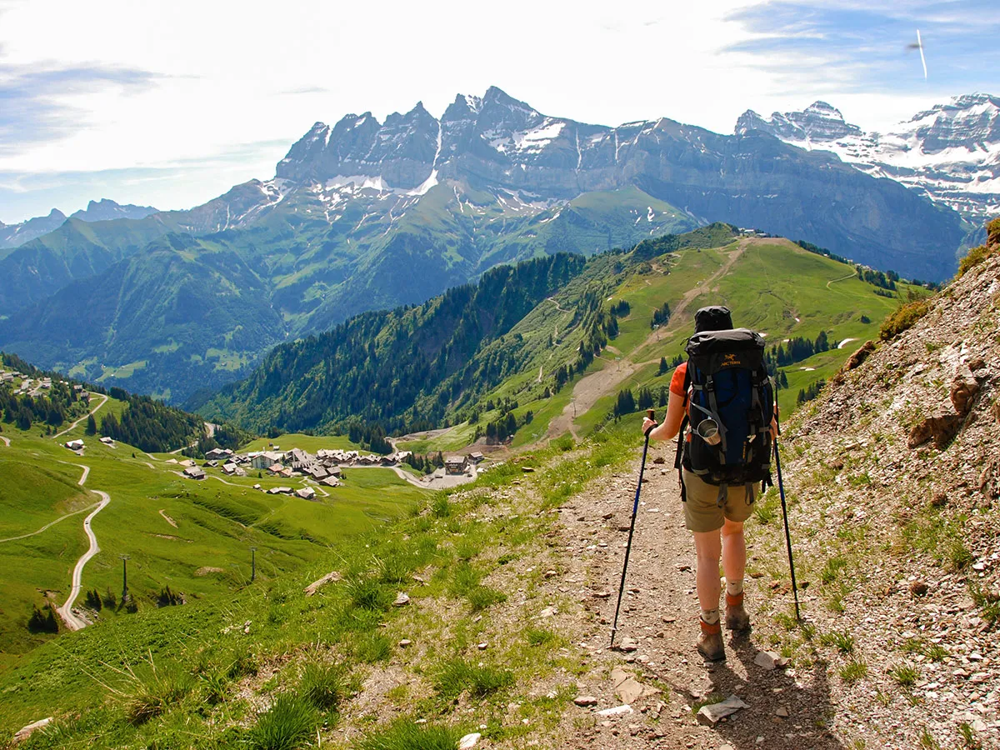

A Journey Through the Alps
The Alps are one of the most spectacular mountain ranges in the world, stretching across eight European countries. Whether you're hiking, skiing, or simply admiring the beauty from a charming alpine village, the Alps provide a variety of experiences for every type of traveler.
Best Places to Explore in the Alps
From Switzerland to Austria, the Alps are filled with breathtaking views and thrilling adventures. Some top places to visit include:
- Zermatt, Switzerland: Known for its stunning views of the Matterhorn and year-round skiing.
- Chamonix, France: A popular destination for skiing and mountaineering near Mont Blanc.
- Innsbruck, Austria: A city nestled in the Alps, offering both cultural attractions and outdoor adventures.
Travel Tips
While visiting the Alps, be sure to pack appropriately for changing weather conditions and consider taking a guided tour if you're venturing into more remote areas.